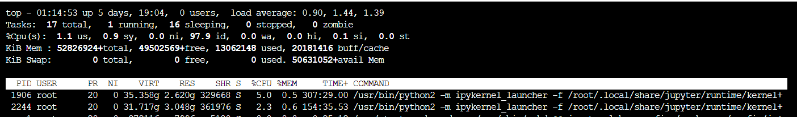

AVA 常见疑问
工作台
- 初次启动工作台失败:
- 检查默认 bucket 是否正确, 可尝试不挂载 bucket 启动工作台
- 如果使用了自定义镜像, 尝试更换为公开镜像
ssh 密钥未设置密码, 连接工作台后却提示输入密码
ssh 密钥错误, 可能原因:
- 使用的不是默认密钥, 需添加 ssh 参数
ssh -i <path/to/private/key> -p <port> root@<host> - 更新密钥后未重启工作台, 重启后即可使用新密钥
- 使用的不是默认密钥, 需添加 ssh 参数
我明明关闭了所有的工作台窗口, 为什么还有 Jupyter Kernel 进程占用资源呢?

关闭浏览器窗口并不会终止 Jupyter Notebook 进程, 对应的 Jupyter Kernel 仍然在后台运行. 如需终止, 需要在 Notebook 页面, 或侧边栏 [Running] => [Kernel Sessions] 中点击 Shutdown. IPython Console 和 Terminal 进程同理.

训练
训练启动失败, log 出现
sh: 1: /workspace/mnt/xxxx.xx: Permission denied入口文件没有可执行权限, 可在工作台中执行
chmod +x /workspace/mnt/xxxx.xx解决.